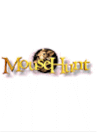
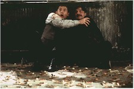
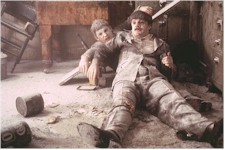
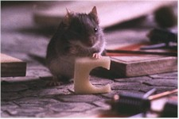

Contents | Features | Reviews | News | Archives | Store |
 |
|
| Movie Credits | Buy It! |
Mouse Hunt
Review by Elias Savada
Posted 19 December 1997
|  | Directed by Gore Verbinski Starring
Nathan Lane, Lee Evans. Screenplay by Adam Rifkin |
This first comedy release and third overall from the wunderkings Spielberg-Katzenberg-Geffen (following their actioner The Peacemaker earlier this year and day-and-dating with Spielberg's Oscar-aimed Amistad) is a serviceable and somewhat above-grade effort that benefits from the talents of its cast, particularly stars Nathan Lane and Lee Evans. Modestly budgeted at $38 million, this Home Alone clone is genetically spliced with childhood memories of Tom and Jerry, recollections of the decaying mansion sets of Jumanji and The Addams Family, and further stirred with the drabness of Blade Runner (on which Mouse's production designer Linda DeScenna worked). Coincidentally, screenwriter Adam Rifkin's current project is Jumanji 2. Much of the above-line crew associated with this film "borrow" from other movies on which they were connected. Realizing its derivative nature, the Dreamworks Pictures marketing department has highlighted pull quotes that place the film in the same class as its higher-grossing cousins, with WNBC-TV's Jeffrey Lyons' "It's Home Alone Meets Babe" being placing high in pre-release newsprint ads. I suspect this low-key push will continue to snowball through holiday season promotion blitz. Stay tuned.
The funeral of irascible string meister Rudolph Smuntz ("A world without string is chaos") opens the film, a fitting tribute to the late William Hickey, best known as the Mafia don in Prizzi's Honor, and whose raspy voice could make gravel curdle. The Brooklyn-born Hickey is catapulted out of his casket and down an open sewer manhole in a pre-credit sequence that pays homage to suspense meister Alfred Hitchcock (recalling his umbrella sequence in Foreign Correspondent). Hickey, who died in late June from complications of emphysema and bronchitis, reappears throughout the film in an oil-based canvas as the family patriarch, his facial expressions ever changing based on the dimwitted shenanigans of his sons.
Mouse Alone, er, Mouse Hunt is the story of the hapless brothers Smuntz. Ernie (Lane) is a pompous, self-inflating celebrity wannabe who would dump the family business into the greedy hands of a mob-controlled conglomerate. Lars (Evans) is a quiet, financially-challenged, henpecked mensch who is dedicated to carrying on the family's investment against the changing times. These siblings' antics portend a bleak future for string. Eccentric dad left his factory to his kids, but Ernie would rather spend time as the pseudo-French chef at a trendy niterie. His luminary status collapses when a cockroach hidden in a box of Cuban cigars (part of his inheritance) causes the death of the mayor while patronizing the restaurant. Lars, meanwhile, is kicked out of his home by wife April (Vicki Lewis) and the two siblings commiserate at a local diner before taking up residence in a crumbling, old mansion that is willed them by their father, as the soundtrack counterpoints with the Bing Crosby holiday favorite "I'll Be Home for Christmas."
When they learn their dilapidated domicile is the lost masterpiece of an architectural genius ("A committed architect before his committal"), their effort to unload the house at a planned auction is complicated by a rodent problem. Enter, stage right, the mouse. As a former New Yorker, I know that rats and their little cousins always come in bunches (just like grapes!). While the movie parlays the many attempts Ernie and Lars to rid their goldmine of its single other occupant, I kept wondering how this little orphan came to be living all by itself. A lonely life indeed. And certainly the immense home is big enough for all three of them to live in peacefully (and prevent the apocalyptic demise of the structure), but then we wouldn't have a movie without some conflict in it, eh? Sorry about these small asides – my mind works that way and undoubtedly the creators decided these small oversights weren't important. (Don't take my comments too seriously. You'll probably enjoy the movie if you go in with an "anything goes" attitude.)
Using a combination of 60 real mice, animatronics, and computer-generated images (kudos to effects wizards Stan Winston and Charles Gibson, and animal trainer Boone Narr), the title star eludes capture and certain death at the hands of the harried homeowners, who connive numerous methods of extinction. Of course, the mouse, a brainy fellow to say the least, proves a much better opponent. Be it against "Catzilla," a mammoth and fierce beast brought in from the city pound for brief dismissal by its diminutive adversary. Or against Christopher Walken as a techno-exterminator ("You have to think like a mouse and get in their minds."), who gets bludgeoned and dragged through the bowels of the house. There is lots of physical comedy and sight gags throughout the film, much of it from the mouse's point-of-view. I wonder if Dreamworks plans on registering the rodent-cam™ method of filmmaking used extensively in this production. Thankfully, the ending is a crowd-pleaser.
Nathan Lane, most recently seen in The Birdcage, will gain a wider audience as viewers realize his comedic talents. Personally, I'm elated that Lee Evans finally gets a co-starring role. His debut in Funny Bones (1995) was a side-splitter as he had me rolling in the aisles. His brand of verbal and physical comedy is not fully realized here in Mouse Hunt, but there are glimpses and these are choice moments for this British-born performer.
Director Gore Verbinski has successfully graduated from the Budweiser frogs and the Nike 100 Foot Hoop commercials to arch-Disney mouse feature. The fact that the film feels like a John Hughes production is probably due to producer Alan Riche, the former president and C.O.O. of Hughes Entertainment and responsible for Dennis the Menace. And yes there are "in" jokes taking on the Eisner kingdom and The Lion King in particular (Lane being the voice of Timon in that blockbuster masterpiece).
Contents | Features | Reviews | News | Archives | Store
Copyright © 1999 by Nitrate Productions, Inc. All Rights Reserved.